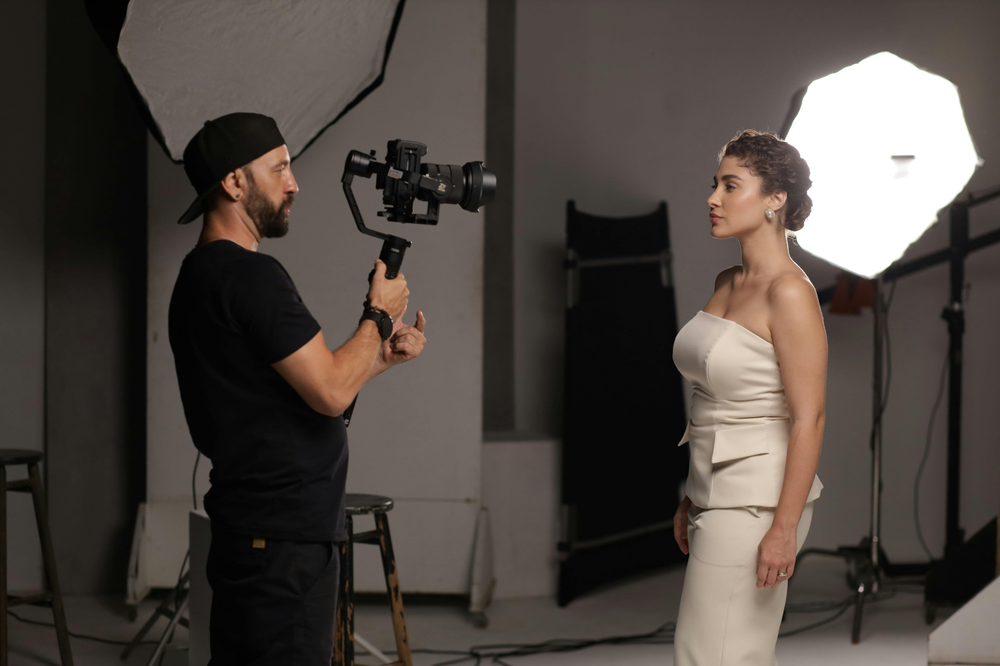

Événements et reportages
Des photos spontanées et authentiques pour immortaliser vos événements artistiques, sportifs ou familiaux avec sensibilité et créativité.

Photographie de mariage
Des clichés sincères et élégants qui retracent avec authenticité chaque instant de votre journée exceptionnelle.

Shooting professionnel
Des photos de qualité pour vos profils, sites web et supports de communication. Mettez votre image au service de vos projets.